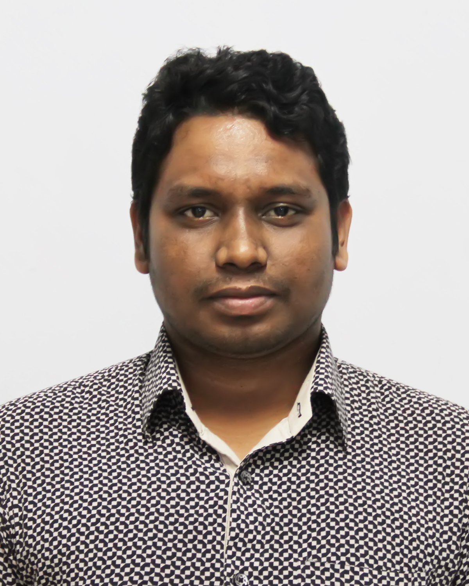

MD RAGIBE AHMED 2H#17, 5th floor, Koratoya Bhaban Babupura Road, BCS Quarter, Nilkhet, Dhaka-1205 +8801924121274 |
 |
SKILLS
OS: Windows, Linux, Mac iOS.
Server Administration: Windows, Linux (Ubuntu, Debian, CentOS, OpenSUSE)
SSH Control System: Git, Putty, Linux Terminal
Editor: Vim, Sublime, Codeblocks, Linux Text Editor
CMS based Web Design: Wordpress, Ghost, Jekyll
Framework: Laravel, Codeigniter, NodeJs, VueJs
Database: MySQL, MariaDB, PostgreSQL, MSSQL and MongoDB/NoSQL
Programming Language: C/++, Python, Javascript, HTML/CSS and my first programming experience with Python. I learned Python 3 very soon.
Projects
Online Shop Site (ongoing); I am using Laravel and MySQL for this project.
Wordpress Development (ongoing); I am using the Wordpress Open Source framework for this project.
EXPERIENCE
BCS Administration Academy, Dhaka
June 2015 - PRESENT
- Manage Servers, Monitoring the network system
- IT Support
- Indoor event Photography
Shehan Group, Dhaka
January 2013 - May 2015
- IT Support
- Manage the official email system
- Execute the IT Issues.
EDUCATION
Dhaka International University, Dhaka- B.Sc. in Computer Science and Engineering
September 2018 - September 2022
Core fields are Computer Systems, Engineering Mathematics, Digital Systems, Electrical Circuits, Data Structures, Computer Organization & Architecture, Algorithm Design & Analysis, Numerical Analysis, Data & Telecommunication, Microprocessor, Microcontroller & Assembly Language, Database Management Systems, Computer Networks, Compiler Design, Peripherals & Interfacing, Artificial Intelligence & Neural Networks.
Dhaka Polytechnic Institute, Dhaka- Diploma in Electronics Engineering
September 2009 - September 2013
Core fields are Digital Electronics, Engineering Mathematics, Digital Systems, Electrical Circuits, Computer Organization & Architecture, Data & Telecommunication, Microprocessor, Microcontroller.
Tofail Ali Technical School and College, Khagatua, Nabinagar, Brahmanbaria- Secondary School Certificate (Vocational)
September 2007 - September 2009
Major in Computer Science.
PROJECTS
- Alumni Management System(Final Year Project); I am using Laravel and MySql, JavaScript for this project.
- E-commerce Site (ongoing); I am using Laravel and MySql for this project.
- Wordpress Open Source theme (ongoing); I am using the Open Source framework for this project.